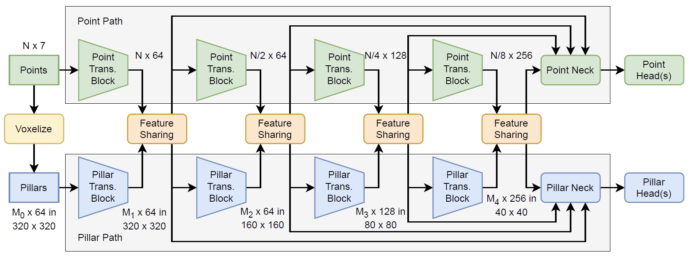

Abstract
4D radars, which provide 3D point cloud data along with Doppler velocity, are attractive components of modern automated driving systems due to their low cost and robustness under adverse weather conditions. However, they provide a significantly lower point cloud density than LiDAR sensors. This makes it important to exploit not only local but also global contextual scene information. This paper proposes DRIFT, a model that effectively captures and fuses both local and global contexts through a dual-path architecture. The model incorporates a point path to aggregate fine-grained local features and a pillar path to encode coarse-grained global features. These two parallel paths are intertwined via novel feature-sharing layers at multiple stages, enabling full utilization of both representations. DRIFT is evaluated on the widely used View-of-Delft (VoD) dataset and a proprietary internal dataset. It outperforms the baselines on the tasks of object detection and/or free road estimation. For example, DRIFT achieves a mean average precision (mAP) of 52.6% (compared to, say, 45.4% of CenterPoint) on the VoD dataset.
Model Architecture

An overview of the DRIFT architecture. The framework features end-to end parallel point and pillar paths, with the point path aggregating fine-grained local features and the pillar path encoding coarse-grained global features. The two paths are tightly coupled with feature sharing blocks that inter-fuse features.
Quantitative Results
| Method | Entire Area | Driving Corridor | ||||||
|---|---|---|---|---|---|---|---|---|
| mAP ↑ | Car ↑ | Ped. ↑ | Cyc. ↑ | mAP ↑ | Car ↑ | Ped. ↑ | Cyc. ↑ | |
| PointPillars | 45.2 | 37.1 | 35.0 | 63.4 | 67.5 | 70.2 | 47.2 | 85.1 |
| CenterPoint | 45.4 | 32.7 | 38.0 | 65.5 | 65.1 | 62.0 | 48.2 | 85.5 |
| CenterPoint* | 47.4 | 39.9 | 37.8 | 64.7 | 67.4 | 71.3 | 47.3 | 83.7 |
| PillarNeXt | 42.2 | 30.8 | 33.1 | 62.8 | 63.6 | 66.7 | 39.0 | 85.1 |
| RadarPillars | 50.7 | 41.1 | 38.6 | 72.6 | 70.5 | 71.1 | 52.3 | 87.9 |
| MVFAN (single scan) | 39.4 | 34.1 | 27.3 | 57.1 | 64.4 | 69.8 | 38.7 | 84.9 |
| MUFASA | 50.2 | 43.1 | 39.0 | 68.7 | 69.4 | 71.9 | 47.4 | 89.0 |
| SMURF | 51.0 | 42.3 | 39.1 | 71.5 | 69.7 | 71.7 | 50.5 | 86.9 |
| DRIFT (attention) (proposed) | 52.6 | 41.4 | 42.2 | 74.3 | 71.5 | 72.4 | 52.9 | 89.3 |
| CenterPoint (pre-trained)* | 47.7 | 39.7 | 35.5 | 67.9 | 66.4 | 70.3 | 45.7 | 83.1 |
| DRIFT (attention, pre-trained) (proposed) | 53.1 | 41.2 | 43.6 | 74.5 | 72.4 | 77.0 | 52.5 | 87.8 |
* re-implemented
Comparison of AP results on VoD validation set. DRIFT uses cross-attention feature sharing. Pre-training is done with the perciv-scenes-2 dataset. The values are in %. The best results of each configuration (pre-trained and not pre-trained) are bold.